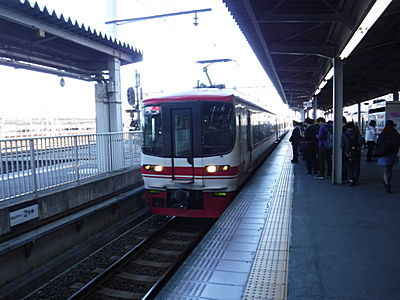
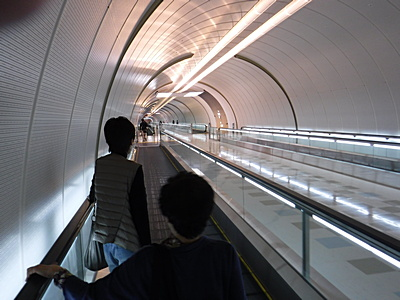

釣行日誌 ＮＺ編 「一期一会の旅：A Sentimental Journey」
出発の朝
11/20(TUE)
出発の朝が来た。8時5分に配車予約しておいたタクシーが時間通りに駐車場に現れ、玄関下まで持ち出しておいたバックパックとデイパックを提げてトランクに積み込む。重い方のバックパックは運転手さんが手伝ってくれた。豊橋ではまだ珍しいトヨタの新型タクシー専用車両である。黒色に見えたが運転手さんの話では濃紺だとのこと。全長はこれまでのクラウンコンフォートに比べてだいぶ短くなり、車高・座席・視点が高くなって見晴らしは良くなったが、最初のうちは取り回しに戸惑ったそうだ。
渋滞の無い裏道を抜けて駅東口まで行ってもらい、２階の改札口に上がるエレベーターの場所を訊ねてからカードで料金を支払い、トランクのバックパックを背負い、デイパックは手に持ってよろよろと歩み出す。20歳の頃は何でも無かった重さだが、このトシになるといささか堪えた。切符売り場で名古屋鉄道の豊橋から中部国際空港までの特急座席指定券を買い、ホームまで再びよろめきつつ降りて、8時45分発の特急を待つ。順調に行けば、11時前には空港へ着けるだろう。成田への国内便は午後2時40分発なので、時間は全然余裕があるのだが、数ヶ月前に名鉄の中部国際空港行きの路線が架線のトラブルで不通になることがあったりしたので、まさかの時には名古屋駅まで行って、バスセンターから出ている高速バスで空港へ向かうルートも考えておいたのだ。前回2010年は旅行代理店勤務で旅慣れた鰐部さんとの同行旅行だったので、何も心配せずに付いて行けば良かったのだが、なにぶん今回は久しぶりの単独海外旅行であり、心配事は山積していた。綿密に調べ上げた旅程表もコピーを３部作り、財布・デイパック・バックパックに分散して仕舞い、どれかの荷物がバッゲージロストに遭ったり忘れたりしても、旅程は判るように準備しておいた。

時刻通りに岐阜行き特急が来て、２人分買った指定席に乗り込み、隣りの席にバックパックとデイパックを置く。神宮前駅で1度乗り換え、また特急の指定座席に乗り込む。初めて来た中部国際空港は、こぢんまりと綺麗にまとまっており、楽に各航空会社のカウンターまでたどり着けた。しかし、大荷物を載せるトロリーを借りる場所がわからなかったので、えっちらおっちらバックパックを背負いつつANAの窓口で訊ねると、成田でニュージーランド航空に乗り換えのチェックインにはまだ時間があると言うことだったので、窓際のベンチに座り、豊橋駅で買ってきたサンドイッチでお昼とした。時間を持て余すのは予想がついていたので、中公文庫のニコライ・A・バイコフ作「偉大なる王（ワン）」を読み始める。
この作品は、僕が小学生の頃父が買ってくれた、小学館発行の少年少女世界文学全集全50巻！のロシア編にダイジェスト版が収められており、主人公の老猟師トン・リと森の王である大型の牡シベリア虎とのふれ合いの描写にいたく感動した思い出があるのだ。2009年に買ったまま積ん読状態にあったのだが、ふと思いついて本棚からデイパックに入れておいたのだ。文学全集にあったのは誰の訳かは判らなかったが、本作は今村龍夫氏の名訳で、子供の頃の感動がそのままよみがえってきた。特に、山中の夜道を歩いていたトン・リが大虎ワンと出くわした時に、いささかの動揺も見せず、歩みを早めることも緩めることもせず淡々とワンに向かって歩んでいくと、何かを察したワンはすっと道を譲り、老人は振り返る誘惑と戦いつつそのまま黙々と歩いて無事小屋までたどり着くというエピソードは、実に手に汗握る描写だった。
名作に夢中になっていると、2時20分過ぎに搭乗が始まり、チケットを見つつ座席を間違えないように座る。定刻をやや遅れて動き出したエアバス機は、飛んでいる時間よりも離陸前・着陸後のタキシング時間の方が長いように思えたくらいあっという間に成田国際空港に着いた。機外には空港内バスが待っており、ロビーまで移動した。バックパックは中部国際空港で預ければそのままオークランド行きの便に積み替えられるので、成田空港内の移動は楽だった。長い地下通路の動く歩道に乗っていくと、同じ便で名古屋から来て、ニュージーランドへツアー旅行に出かけるというご婦人がた２人と一緒になり、しばし歓談した。
成田発オークランド行きNZ90便は午後6時30分発であり、再び搭乗ゲート前で文庫本に熱中した。やがて時刻となり、搭乗が始まった。長い列が２列も出来ていたが、どうせ席は決まっているからと、ぎりぎりまで座って本を読み続け、しんがりで機内に乗り込んだ。座席を探して行くと、何と３列の１番窓際である。通路側には日本人らしいティーンエージャーの女の子、中央にはニュージーランドへ帰るのだろうか妙齢の美女がすでに座っており、いささか動揺しつつデイパックを頭上の荷物入れに収め、お２人にスミマセンねと席を立ってもらって窓際へと潜り込んだ。動揺したおかげで用意しておいた携帯スリッパと空気枕を取り出すのを忘れ、しまったと後悔したが、またお２人に立ってもらってデイパックから取り出すのも気が引けたので、結局それらは使わずじまいだった。さすがにスニーカーを履いたままでは窮屈だったので、すぐに靴を脱いだ。
やはり定刻よりも10分ほど遅れてタキシングを開始したボーイング機は、しばし離陸の順番待ちをしていたが、やがてすっかり暗くなった滑走路を急加速して離陸した。ディスプレイの表示ではオークランドまで約9時間50分とのことだった。
離陸後１時間ほどで偉大なる王を読み終えたので、映画を見ることにした。アクション映画のリストには未見のジュラシックッパーク最新作「炎の王国」があったので、ついつい甘えて吹き替え版を見ることにした。
夕食には和風ビーフを頼み、アルコール類の摂取は常服薬と相性が悪いのでオレンジジュースを頂いた。美味しいと評判の良いニュージーランド産の白ワインには心惹かれたけれど。しかし、よくも狭い機内の設備でこれほど大勢の乗客にこんなに温かい料理が出せるものだといつも感心する。食後に財布にしまっておいた安定剤と睡眠薬を飲んで眠る体勢に入ったが、これも毎度のことで一睡もできない。ディスプレイの地図には、太平洋上の機体位置が映されているが、微動だにしない。これが目で見えるほどに移動していたら極々超音速、あるいは亜光速の旅客機であろう。（笑）
映画の続きを見つつ、朝食も美味しくいただいていると、オークランド空港に近づいて高度を下げている旨のアナウンスがあった。シートベルトを締め、とうとうニュージーランドがもうすぐかと感慨深かった。
釣行日誌ＮＺ編 目次へ
サイトマップ
ホームへ
お問い合わせ